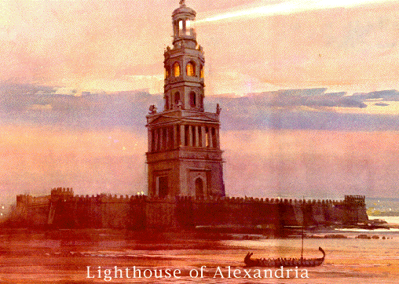

The Lighthouse of Alexandria/Pharos Lighthouse
The lighthouse of Alexandria was the only wonder that served a functional purpose, which was to allow sailors to find the Nile River long before they could see land. The Lighthouse was also an engineering feat, being the tallest building in the world at the time it was constructed. The Lighthouse also housed a scientific wonder, which was the mirror that was used to direct light as far out as 50 kilometers out into the Mediterranean Sea.
The Lighthouse of Alexandria is built on the island of Pharos at the direction of Ptolemy Soter. Ptolemy was present at the founding of Alexandria and took control of Egypt upon Alexander's death. The project was started around 290 B.C. and construction outlived Soter. Work on the Lighthouse was completed by his son, Ptolemy Philadelphus. The lead architect was Sostratus, whom was a contemporary of Euclid. The engineering for the project was supplied by the Alexandria Library. The Lighthouse used fire to crete light at night and reflected the sun's rays during the day.
Abou-Haggag Al-Andaloussi described the Lighthouse in 1166 as having three stages. The first stage was a square that was 55.9 meters tall and had a cylindrical core. The middle stage was octagonal and had a side length of 18.3 meters and a height of 27.45 meters. The third stage was circular and was 7.3 meters tall. The total height of the building was 117 meters - the same height as a modern 40-story building. At the top stood a statue of Poseidon during the early years of the Lighthouse.
The Arab conquest of Egypt was not kind to the Lighthouse. The capitol was moved from Alexandria to Cairo, so the strategic need for the Lighthouse was diminished. Also, the mirror was unmounted and was never restored to its mountings. Earthquakes in 1303 and 1323 caused significant damage to the building. No serious re-building of the Lighthouse was attempted. In 1349, Ibn Battuta visited the Lighthouse but could not enter due to rubble blocking his path. Mamelouk Sultan dismantled the Lighthouse in 1480 and used the materials to build a castle on the same spot that held the Lighthouse.
Visit our project form to request travel information to the lighthouse!